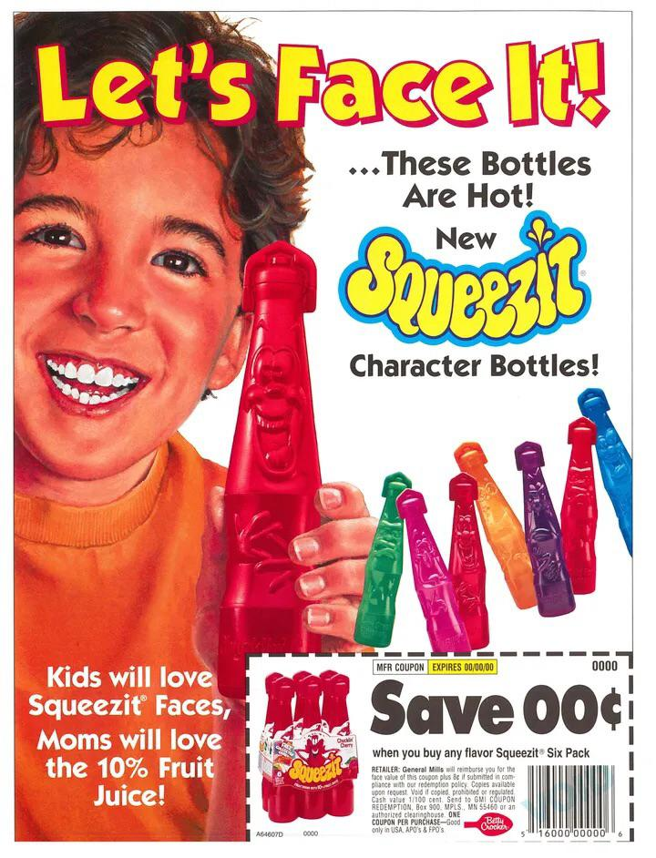
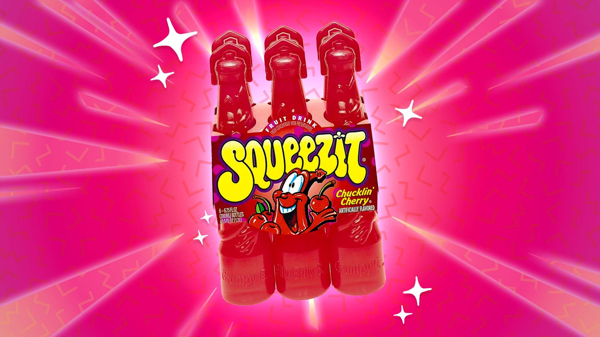
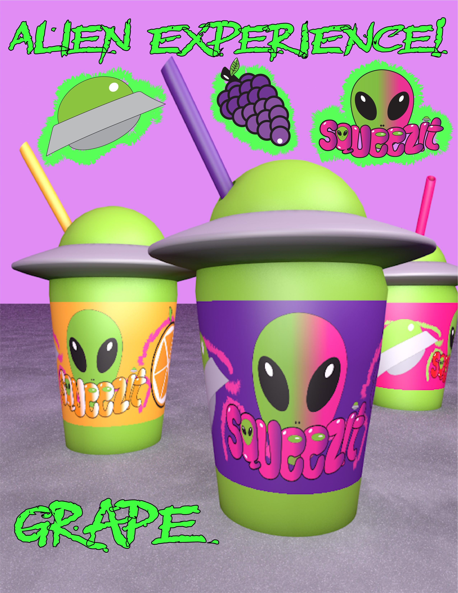

Cinemagraph Video
Our Flavors Title
History of Squeezit!
The Past

Squeezit was a fruity kids’ drink introduced by General Mills in 1985, instantly recognizable for its colorful, squeezable plastic bottles. Marketed with the slogan “Squeeze the fun out of it!”, it became a hit in the late ’80s and ’90s thanks to its playful design and variety of flavors. In 1992, the brand added quirky bottle characters like Chucklin’ Cherry and Grumpy Grape, along with creative twists such as “Mystery Squeezit” (black bottles with secret flavors) and color-changing editions that came with special tablets to drop into the drink. Tie-ins like the mid-’90s Life Savers flavors only added to its popularity among school lunch boxes and summer snacks.
Despite its nostalgic charm, Squeezit’s sales declined, leading to its discontinuation in 2001. Brief comebacks between 2006–2007 and 2011–2012 sparked short-lived excitement, but the brand never fully returned. Today, Squeezit lives on as a beloved ’90s pop culture memory, often recalled fondly for its bright colors, fun gimmicks, and the simple joy of squeezing every last drop from the bottle.
Old photo

The Past
Now, under the leadership of CEO Mikhail Kirs, Squeezit is blasting back into the spotlight with an entirely new identity. This isn’t just a revival—it’s a complete reimagining of the brand for a new generation. The new era draws inspiration from childhood wonder, science fiction, and the thrill of discovery, with bottles designed to look like flying saucers and alien mascots that give every flavor its own playful personality and story. Every squeeze is meant to feel like opening a tiny adventure, combining taste with imagination in a way that goes beyond ordinary juice. Launching with six exciting flavors—grape, strawberry, orange, and more—each bottle doubles as a collectible, making Squeezit not just a drink, but a fun experience to share, trade, and enjoy. The mission is simple: bring back the excitement, the color, and the unforgettable taste of Squeezit—while adding a dash of mystery, fun, and adventure that kids and adults alike can explore. Squeezit has landed, and it’s ready to capture imaginations all over again.
